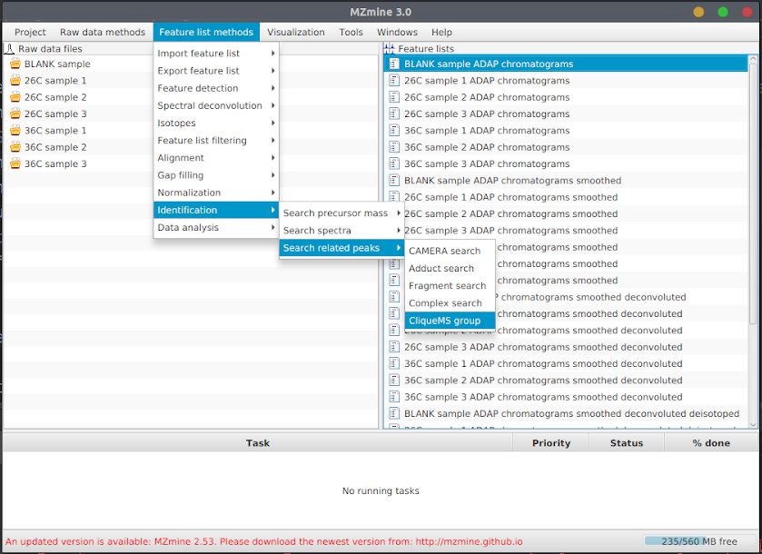
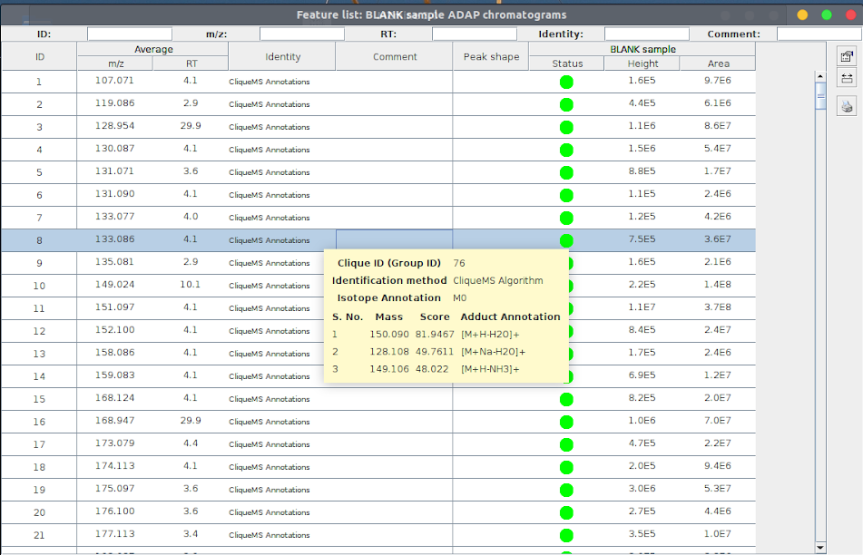
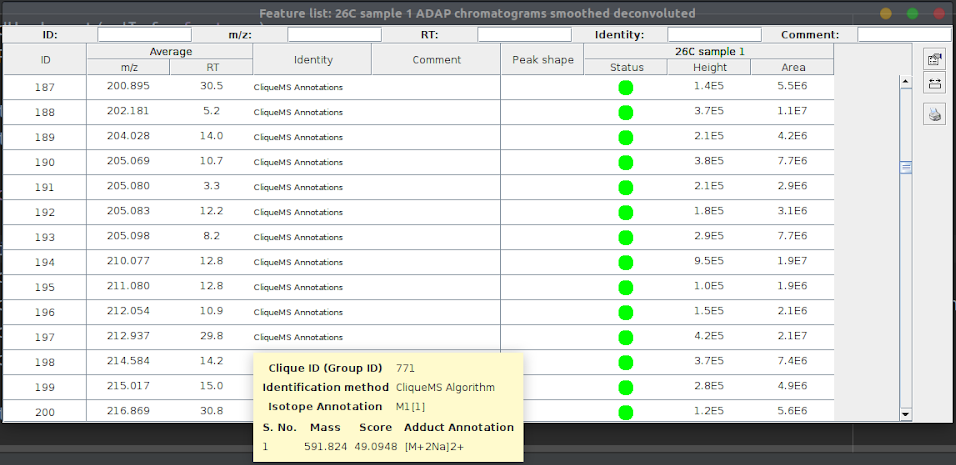

This module uses the CliqueMS algorithm [1] to group and annotate the
features.
Parameters Description
PeakList - Feature List on which cliqueMS algorithm is to be performed.
Filter - Filter out similar features if they pass all MZ, RT and intensity tolerances.
Two features are considered similar if their relative change in m/z, rt and intensity are less
than the respective tolerances. If filter is set, following options are given -
MZ tolerance - If Filter option is set, this value determines the similarity of two
features, if their relative difference of m/z values is less than this, they are considered
similar.
RT tolerance -If RT tolerance is set a relative value of 'x' (or absolute value 'y'),
then a feature with rt value of 't' will have all peaks with rt in the closed range [t - t*x,
t + t*x ] ( or [t-y, t+y]) similar to it (if m/z and intensity tolerance values are passed
too).
Intensity tolerance -If Intensity tolerance is set a value of x, then a feature with
intensity value 'i' will have all peaks with the intensity range [ i - i*x , i + i*x] similar
to it (Note - Tolerance is unitless)(if m/z and rt tolerance values are passed too).
Log - likelihood tolerance - The Log likelihood function is maximised for clique
formation.
The iterations are stopped when the relative change in current log likelihood with respect to
the initial log likelihood is less than the log-likelihood tolerance value.
Isotopes max. charge - The maximum charge considered when two features are tested to
see they are isotope or not. No isotope will be annotated with a charge greater than this.
Isotopes max. per cluster - The maximum number of isotopes per cluster. Cluster will be
resized if size found greater than this.
Isotopes mass tolerance - Mass tolerance used when identifying isotopes, relative
error in ppm to consider that two features have the mass difference of an isotope, Two features
are considered isotopes if the difference of their absolute mass difference from the reference
mass difference is within this tolerance limit
Isotope reference mass difference - The reference mass difference between two features
to be considered isotopes
Annotation max annotation - All neutral masses in the group are ordered based on their
adduct log-frequencies and their number of adducts. From that list, a number of these many
masses are considered for the final annotation.
Annotation feature max annotation - In addition to 'topmasstotal', for each feature
the list of ordered neutral masses is subsetted to the masses with an adduct in that particular
feature. For each sublist, these number neutral masses are also selected for the final
annotation.
Annotation max features per clique - After neutral mass selection, if a clique group
has a number of monoisotopic features bigger than this parameter, the annotation group is
divided into non-overlapping annotation groups. Each subdivision is annotated independently.
Adduct polarity - Adduct polarity
Annotation mass tolerance - Tolerance in mass according to which we consider two or
more features compatible with a neutral mass and two or more adducts from Adduct List
Annotation duplicate filter - This parameter removes redundant annotations. If two
neutral masses in the same annotation group have a relative mass difference smaller than this
parameter and the same features and adducts, drop the neutral mass with less adducts
non-Annotation score - Score given to non annotated features. The value should not be
larger than any adduct log frequency (therefore given default value of -6.0, see log10freq of
IonizationType)
Annotation Normalize score - If 'TRUE', the reported score is normalized and scaled.
Normalized score goes from 0, when it means that the raw score is close to the minimum score
(all features with empty annotations), up to 100, which is the score value of the theoretical
maximum annotation (all the adducts of the list with the minimum number of neutral masses).
Steps to use CliqueMS module
CliqueMS algorithm works on feature lists, so firstly feature lists must be generated for some
sample raw Data file. When they are generated, follow these steps to run CliqueMS algorithm on the
feature list -
Select the feature list(s) to run the cliqueMS algorithm.
Select the feature list(s) to run the cliqueMS algorithm.
Click on Feature list methods > Identification > Search related peaks > CliqueMS group 
A parameter list will pop up similar to this.
Click on help to find in detail what the parameters mean.
Click on OK to run CliqueMS algorithm, check the task status in the window below. After a
while when task is completed, you can find the annotations for the features by hovering the
cursor over the identity column of any feature. 
The result includes -
Clique ID, features with same cliqueID belong to same group (as in metabolomics, single
metabolites can be detected as multiple ions of different mass).
Identification method - CliqueMS Algorithm
Isotope Annotation - This is annotated in the form of Mx[y] where x = grade of the isotope and
y is cluster label for the isotope. In CliqueMS, all features in a clique are checked to form a
chain of isotopes called clusters. Within each cluster, the Isotopes are graded in increasing
order of mass, 0 for least mass and so on.
Annotations for the feature from a list of adducts present in MZMine. There are maximum 5
annotations for any feature.
Demonstration for CliqueMS
Running the CliqueMS algorithm on “26C sample 1 ADAP chromatograms smoothed deconvoluted” from the sample mzmine project gives following results -
Number of features = 793
Number of cliques (groups) = 107
minimum no. of features in a cliques = 1
maximum no. of features in a cliques = 138
average no. of features in a cliques = 7
Isotopes adduction is correctly done, for instance peak#197 and peak#357 are isotopes, so have
same cluster ID, and grade of smaller mass is 0 and greater one is 1. Also, they are annotated
with same adduct.

These are different nodes of a same clique, clique ID - 771.
[Note - On running CliqueMS algorithm again, the Clique ID is expected to change, but the
elements in the same clique should be same, but there might be little changes based on which
peak is taken first which happens randomly]
[1] Oriol Senan, Antoni Aguilar-Mogas, Miriam Navarro, Jordi Capellades, Luke Noon,
Deborah Burks, Oscar Yanes, Roger Guimerà, Marta Sales-Pardo, CliqueMS: a computational tool
for annotating in-source metabolite ions from LC-MS untargeted metabolomics data based on a
coelution similarity network, Bioinformatics, Volume 35, Issue 20, 15 October 2019,
Pages 4089–4097,
https://doi.org/10.1093/bioinformatics/btz207